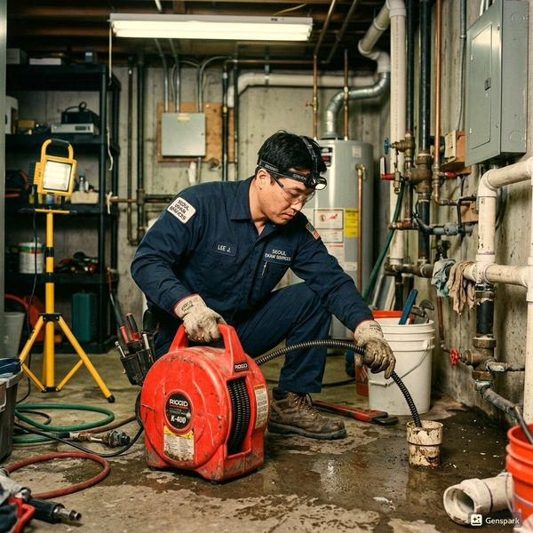
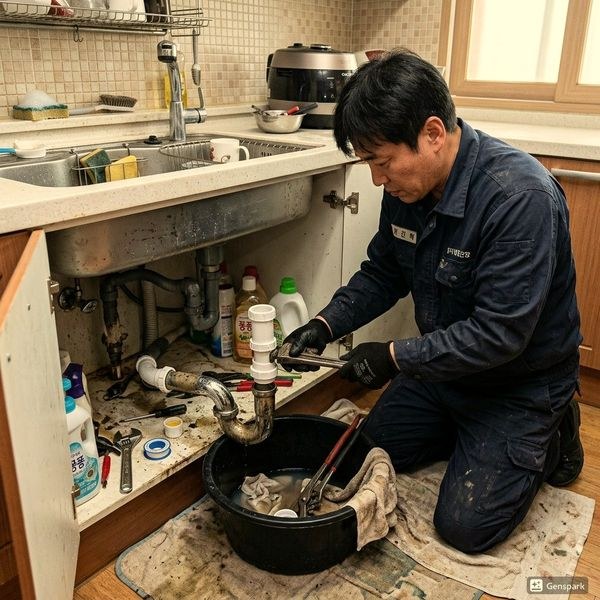

그리스트랩 설치 및 관리의 법적 근거
하수도법 시행규칙 제40조에 따라 연면적 300㎡ 이상의 음식점은 유지류 차단시설(그리스트랩) 설치가 의무입니다. 또한 지자체 조례에 따라 소규모 음식점도 설치를 권고하거나 의무화하는 추세입니다. 그리스트랩은 주방에서 배출되는 폐수에 포함된 기름과 고형물을 하수관에 유입되기 전에 분리하는 장치입니다. 설치만으로 끝이 아니라, 정기적인 청소와 관리가 법적으로 요구됩니다. 미관리 시 하수관 막힘, 악취, 해충 발생은 물론 환경오염으로 이어져 과태료 처분을 받게 됩니다.

과태료 기준과 올바른 관리 방법
그리스트랩 관리 위반 시 1차 50만원, 2차 100만원, 3차 200만원의 과태료가 부과됩니다(하수도법 제82조). 올바른 관리를 위해서는 최소 주 1회 이상 그리스트랩 내부의 부유 기름과 침전물을 제거하고, 월 1회 전문 업체의 고압세척 청소를 받는 것이 좋습니다. 분기 1회 이상 배관까지 포함한 전면 점검도 권장됩니다. 제우스시설관리는 음식점 전문 그리스트랩 청소 서비스를 제공하며, 정기 관리 계약 시 월 비용을 크게 절감할 수 있습니다. 위생 점검 대비 관리 기록도 함께 제공해 드립니다. 28분 내 출동으로 긴급 상황에도 대응합니다.
자주 묻는 질문
Q. 그리스트랩 청소를 직접 해도 되나요?
A. 간단한 부유물 제거는 가능하지만, 내부 배관까지 포함한 전문 청소는 고압세척 장비가 필요하므로 전문 업체에 맡기는 것이 효과적입니다.
Q. 그리스트랩이 작은데 교체해야 하나요?
A. 영업장 규모와 배출량에 비해 용량이 작으면 기름 차단 효율이 떨어져 과태료 대상이 될 수 있습니다. 현장 진단 후 적정 용량을 안내해 드립니다.